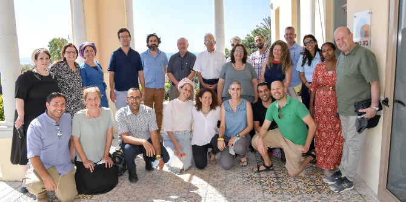

Photo: Shlomi Amsalem
Photo: Shlomi Amsalem
Steve Hoffman, chairman of the Jack, Joseph and Morton Mandel Foundation, and
Professor Jehuda Reinharz, president of the Foundation, joined
Moshe Vigdor, director general of the Mandel Foundation–Israel for a tour and meetings in the Gaza border region, where they learned about the complexity of life in the communities in the Gaza envelope.
They arrived at two lookout points along the border, one at Kibbutz Kissufim and the other at Kibbutz Erez. There they heard about the challenges of the region and about inspiring programs from several of the region’s leaders: Ofir Liebstein, director of the Sha’ar HaNegev Regional Council and a graduate of Cohort 2 of the Mandel Program for Regional Leadership in Beer Sheva, Gadi Yarkoni, director of the Eshkol Regional Council, and Michal Peleg-Uziyahu, director of the Community Department in the Eshkol Regional Council.
After touring the area, the Mandel leadership met with fellows of the Mandel Program for Regional Leadership in the Gaza Border Communities. The meeting, which took place at Beit Alami on Kibbutz Zikim, focused on the leadership challenges in the Gaza border area and the Mandel program’s contribution to dealing with these challenges. Issues that were discussed included the importance of building community resilience in the region, the lack of workers in the health and paramedical professions, the importance of nurturing local and regional leadership, and the need for cooperation between the various authorities in order to create joint projects that would improve quality of life in the western Negev as a whole. The members of the Mandel leadership were impressed with the high quality of the fellows, who are committed to effecting change in the Negev.
 Photo: Shlomi Amsalem
{kind=link}